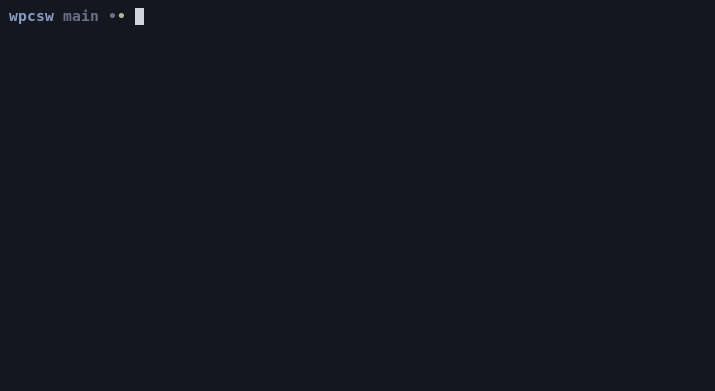

Napisz program który po uruchomieniu wyświeli twoje imię i nazwisko. Skompiluj go za pomocą gcc i uruchom z terminala.
$ ./a.out
Jan Kowalski#include <stdio.h>
int main(void)
{
printf("Jan Kowalski\n");
return 0;
}Znak \n to znak nowej linii (czyli “enter”).
Następnie:
$ gcc main.c -o imieinazwisko
$ ./imieinazwisko
Jak KowalskiNapisz program który przyjmuje 2 argumenty: imie i nazwisko, a następnie je wyświetla.
$ ./a.out Przemyslaw Czarnota
Przemyslaw Czarnota
$ echo $?
0Podanie niepoprawnej liczby argumentów, powinno skutkować wyświetleniem błędu na standardowy strumień błędów oraz zwróceniem kodu błędu różnego od 0.
$ ./a.out Za duzo argumentow >/dev/null
error: wrong number of arguments
$ echo $?
1#include <stdio.h>
int main(int argc, char **argv)
{
if (argc != 3) {
fprintf(stderr, "error: wrong number of arguments\n");
return 1;
}
printf("%s %s\n", argv[1], argv[2]);
return 0;
}Gdy uruchamiamy ./program Jan Kowalski, system operacyjny jako drugi argument funkcji main() przekazuje następującą tablicę ciągów znaków:
char *argv[] = { "./program", "Jan", "Kowalski" };Warto zauważyć że wywołanie systemowe execvp przyjmuje podobny argument :)
Napisz program, który będzie odczytywał ze standardowego wejścia liczby do momentu wystąpienia wejścia, które nie jest liczbą lub końca strumienia i na końcu wyświetli ich średnią arytmetyczną.
$ ./a.out
1
2
3 <--- tu wcisnąłem Ctrl-d
2.000000Przydatne funkcje:
scanf() - odczytuje zmienne ze standardowego wejściaSkrót klawiaturowy Ctrl-d, powoduje wysłanie znaku końca pliku.
#include <stdio.h>
int main(void)
{
int sum = 0;
int count = 0;
while (1) {
int number;
int num = scanf("%d", &number);
if (num != 1)
break;
sum += number;
count++;
}
printf("%f\n", (float)sum / count);
return 0;
}#include <stdio.h>
int main(void)
{
int sum = 0, count = 0, number;
while (scanf("%d", &number) == 1) {
sum += number;
count++;
}
printf("%f\n", (float)sum / count);
return 0;
}Napisz program, który będzie odczytywał liczby ze standardowego wejścia i wypisze je w odwrotnej kolejności.
$ seq 1 3 | ./a.out
3
2
1Program powinien działać maksymalnie dla 4096 liczb całkowitych. Dalsze liczby są odrzucane.
Do rozwiązania będzie potrzebne wykorzystanie tablicy. Na przykład
int tablica[4096];#include <stdio.h>
int main(void)
{
int numbers[4096];
int count = 0;
int number;
/* Dopóki liczby są na standardowym wejściu */
while (1 == scanf("%d", &number)) {
if (count >= 4096)
break;
numbers[count] = number;
count++;
}
for (int i = count - 1; i >= 0; --i)
printf("%d\n", numbers[i]);
return 0;
}Napisz program który wyświetli wszystkie argumenty przekazane do programu
$ ./a.out a b d e foo bar
a
b
d
e
foo
bar#include <stdio.h>
int main(int argc, char **argv)
{
for (int i = 1; i < argc; ++i)
printf("%s\n", argv[i]);
return 0;
}Napisz program, który będzie odczytywał ze standardowego wejścia liczby do momentu wystąpienia wejścia, które nie jest liczbą lub końca strumienia i na końcu wyświetli najmniejszą liczbę. Program powinien też działać dla liczb ujemnych.
$ ./a.out
1
-2
2
-1
-2 <--- tu wcisnąłem Ctrl-d co powoduje wyświetlenie wynikuPrzydatne funkcje:
scanf() - odczytuje zmienne ze standardowego wejścia#include <stdio.h>
int main(int argc, char **argv)
{
int min, number;
if (1 != scanf("%d", &min))
return 0;
while (1 == scanf("%d", &number)) {
if (number < min)
min = number;
}
printf("%d\n", min);
return 0;
}Rozwiń program z Zadania 4, tak aby działał dla dowolnej ilości liczb, która jest podana jako pierwszy argument.
./a.out 5
1
2
3
4
5
5
4
3
2
1#include <stdio.h>
#include <stdlib.h>
int main(int argc, char **argv)
{
int max_count, count = 0, number;
if (argc != 2)
return 1;
if (1 != sscanf(argv[1], "%d", &max_count))
return 1;
int *numbers = malloc(max_count * sizeof(numbers[0]));
/* Dopóki liczby są na standardowym wejściu */
while (count < max_count && 1 == scanf("%d", &number)) {
numbers[count] = number;
count++;
}
for (int i = count - 1; i >= 0; --i)
printf("%d\n", numbers[i]);
free(numbers);
return 0;
}Rozwiń program z Zadania 4, tak aby działał dla dowolnej ilości liczb, ale bez podawania maksymalnej ilości liczb jako pierwszy argument. Wewnętrzna tablica powinna się dynamicznie rozszerzać.
Przydatne funkcje:
malloc() - alokuje pamięćrealloc() - realokuje pamięćfree() - zwalnia pamięćmemcpy() - kopiuje daneSprawdź czy nie ma wycieków pamięci:
$ valgrind --leak-check=full --show-leak-kinds=all ./program
$ gcc main.c -fsanitize=address -o program
$ ./program#include <stdio.h>
#include <stdlib.h>
int main(int argc, char **argv)
{
int *numbers = NULL; /* realloc(NULL, ...) i free(NULL) jest ok */
int count = 0;
int number;
while (1 == scanf("%d", &number)) {
numbers = realloc(numbers, (count + 1) * sizeof(numbers[0]));
if (!numbers)
goto out; /* goto nie jest "złe", jeżeli używamy do obsługi błędów */
numbers[count] = number;
count++;
}
for (int i = count - 1; i >= 0; --i)
printf("%d\n", numbers[i]);
out:
free(numbers);
return 0;
}Napisz program który będzie działał jak program yes.
$ ./program | head -n 3
y
y
y$ ./program no | head -n 3
no
no
noZ tą drobną różnicą, że będzie obsługiwał tylko jeden argument.
#include <stdio.h>
int main(int argc, char **argv)
{
while (1)
printf("%s\n", argc >= 2 ? argv[1] : "y");
return 0;
}Napisz funkcję która będzie sortować tablicę liczb typu int algorytmem sortowania bąbelkowego. Pseudokod:
sort(items, len) {
for (i = 0; i < len - 1; i++) {
for (j = 0; j < len - 1 - i; j++) {
if (items[j] > items[j + 1])
swap(items[j], items[j + 1]);
}
}
}Wykorzystanie:
int n[] = {8, 3, 4, 5, 6, 7, 8};
sort(n, 7);void sort(int *items, unsigned int len)
{
for (unsigned int i = 0; i < len - 1; ++i) {
for (unsigned int j = 0; j < len - 1 - i; j++) {
if (items[j] > items[j + 1]) {
int tmp = items[j];
items[j] = items[j + 1];
items[j + 1] = tmp;
}
}
}
}Napisz funkcję która będzie sortować tablicę liczby typu float algorytmem sortowania bąbelkowego. Dodaj do niej parametr określający porządek sortowania.
void sort_float(float *items, unsigned int len, bool reversed);Wykorzystanie:
float n[] = {8.0f, 3.0f, 4.0f, 5.0f, 6.0f, 7.0f, 8.0f};
sort_float(n, 7, false);void sort_float(float *items, unsigned int len, bool reversed)
{
for (unsigned int i = 0; i < len - 1; ++i) {
for (unsigned int j = 0; j < len - 1 - i; j++) {
bool swap;
if (reversed)
swap = items[j] < items[j + 1];
else
swap = items[j] > items[j + 1];
if (swap) {
float tmp = items[j];
items[j] = items[j + 1];
items[j + 1] = tmp;
}
}
}
}Zdefiniuj makro ARRAY_SIZE(), które pozwoli obliczać liczbę elementów w tablicy w trakcie kompilacji (jeżeli rozmiar jest znany w trakcie kompilacji)
int n[] = {8, 3, 4, 5, 6, 7, 8};
sort(n, ARRAY_SIZE(n));float n[] = {8.0f, 3.0f, 4.0f, 5.0f, 6.0f, 7.0f, 8.0f};
sort_float(n, ARRAY_SIZE(n));Przydatny operator:
sizeof(x) - podaje rozmiar wyrażenia#define ARRAY_SIZE(x) (sizeof(x) / sizeof((x)[0]))Napisz generyczną funkcję sort(), która może posortować tablicę dowolnego typu:
void sort(void *ptr, unsigned int count, unsigned int element_size,
int (*comparator)(const void *a, const void *b));int compare_double(const void *__a, const void *__b)
{
const double *a = __a, *b == __b;
if (*a == *b)
return 0;
return *a < *b ? -1 : 1;
}double items[] = { 2.0f, 8.0f, -1.0f, 3.0f };
sort(items, ARRAY_SIZE(items), sizeof(items[0]), compare_double);Funkcja powinna dawać taki sam efekt jak qsort().
#include <string.h>
void sort(void *array, int count, unsigned int elem_size,
int (*compare)(const void *a, const void *b))
{
for (int i = 0; i < count - 1; ++i) {
for (int j = 0; j < count - 1 - i; j++) {
void *a = array + j * elem_size;
void *b = array + (j + 1) * elem_size;
if (compare(a, b) >= 1) {
unsigned char tmp[elem_size];
memcpy(tmp, a, elem_size);
memcpy(a, b, elem_size);
memcpy(b, tmp, elem_size);
}
}
}
}Napisz program który jako pierwszy argument przyjmie ciąg znaków. Następnie wypisze ciąg znaków, zamieniając wszystkie duże litery na małe.
$ ./program "This Should Be Small 1234"
this should be small 1234Zamiana znaków powinna się dokonać z wykorzystaniem autorskiej funkcji
void autorskafunkcjadozamianyznakow(char *str);Przydatne informacje:
memcpy(), strncpy(), strcpy(), snprintf().'a' - 'A'.'A' <= litera && litera <= 'Z'.to_lower()void to_lower(char *str)
{
unsigned int len = strlen(str);
for (unsigned int i = 0; i < len; ++i) {
if ('A' <= str[i] && str[i] <= 'Z') {
str[i] += 'a' - 'A';
}
}
}main()#include <stdio.h>
void to_lower(char *str) { ... }
int main(int argc, char **argv)
{
if (argc != 2)
return 1;
char str[256];
int size = snprintf(str, sizeof(str), "%s", argv[1]);
if (size >= sizeof(str))
return 1;
to_lower(str);
printf("%s\n", str);
return 0;
}Terminalem, na który wypisujemy można sterować specjalnymi kodami ANSI (https://en.wikipedia.org/wiki/ANSI_escape_code). Możemy w ten sposób na przykład:
fprintf(stderr, "%c[2J", 0x1b); /* Wyczyścić ekran */
fprintf(stderr, "%c[%d;%dH", 0x1b, y, x); /* Umieścić kursor w wierszu y i kolumnie x */Napisz 2 funkcje:
/* Czyści ekran */
void clrscr(void);
/* Umieszcza kursor w wierszu y i kolumnie x */
void gotoxy(int x, int y);Narysuj za ich pomocą animację przypominającą “kod z matrixa”. Do generowania liczb losowych możesz użyć rand(). Do kontroli szybkości animacji usleep().

void gotoxy(int x, int y)
{
fprintf(stderr, "%c[%d;%dH", 0x1b, y, x);
}
void clrscr(void)
{
fprintf(stderr, "%c[2J", 0x1b);
}#include <stdio.h>
#include <unistd.h>
#include <stdlib.h>
void gotoxy(int x, int y) { ... }
void clrscr(void) { ... }
int main(void)
{
clrscr();
while (1) {
int column = rand() % 79 + 1;
int len = rand() % 24;
for (int i = 1; i < len; ++i) {
gotoxy(column, i);
char c = rand() % 30 + 50;
fprintf(stderr, "%c", c);
gotoxy(column, i);
usleep(50000);
}
}
}